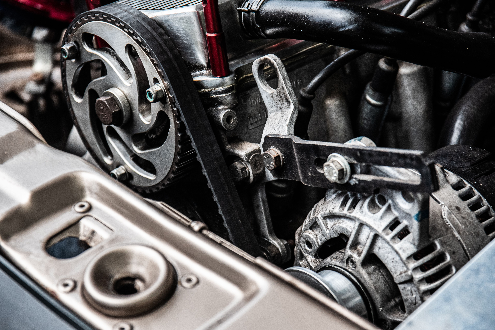

How to Fix a Clicking Starter Motor: Causes & Solutions
A clicking starter motor with an engine that will not crank is most commonly caused by a weak or discharged battery, poor battery cable connections, a bad ground connection, or a faulty starter motor. Rapid clicking often points toward insufficient electrical power, while a single strong click can indicate a starter, solenoid, cable, or connection problem.

Why Is My Starter Motor Clicking?
Hearing a click when you turn the key or press the start button means that some part of the starting circuit is responding, but it does not necessarily mean the starter motor itself is bad.
The starter needs a large amount of electrical current to turn the engine. If the battery is weak, a cable connection has excessive resistance, or the starter has an internal fault, you may hear clicking without the engine actually cranking.
The sound itself can provide a useful clue. Rapid repeated clicks and one solid click can point toward different problems, although the exact cause depends on the vehicle.
What Different Starter Clicking Sounds Can Mean
Rapid Repeated Clicking
Rapid clicking usually occurs when the starter solenoid engages and then drops out repeatedly because the available voltage falls too low under load. A weak battery or poor battery connection is a common reason.
One Loud Click
A single strong click can mean the starter solenoid is engaging but the starter motor is not turning. Possible causes include a weak battery, poor cable connection, faulty solenoid, or a problem inside the starter.
Clicking With No Dash Lights
If the vehicle loses electrical power when you attempt to start it, inspect the battery terminals and main battery connections. A severely discharged battery or poor connection can prevent the vehicle from supplying enough electrical power to the starter.
How to Diagnose a Clicking Starter
1. Check the Battery
Start with the battery because it is one of the most common causes of a clicking no-start condition.
Check whether the headlights, interior lights, dashboard, and other electrical accessories appear unusually weak. If the lights become very dim when you attempt to start the engine, the battery may not be able to supply enough current.
A battery can show some voltage and still be unable to deliver the current required by the starter, so visual symptoms alone cannot completely confirm battery condition.
2. Inspect the Battery Terminals
With the vehicle switched off, inspect the battery terminals for corrosion, looseness, or damaged connections.
Corrosion or a loose terminal can create enough electrical resistance to prevent the starter from receiving the current it needs.
3. Check the Battery Cables
Follow the positive and negative battery cables and look for obvious damage, loose connections, or corrosion.
Pay particular attention to the negative cable and its connection to the vehicle body or engine. A poor ground can produce symptoms that resemble a failed starter.
4. Try a Proper Jump Start
If the battery appears weak, a properly performed jump start can help determine whether insufficient battery power is contributing to the problem.
Follow the vehicle manufacturer's instructions for jump starting. Connect the cables correctly and keep the vehicles from touching if using another vehicle as the power source.
If the engine starts after a jump but later develops the same problem, the battery, charging system, or another electrical issue may require further diagnosis.
5. Listen to the Starter
If the battery and connections appear healthy, pay attention to the sound when starting the vehicle.
A single click without engine rotation can indicate that the starter solenoid is receiving a start signal but the starter motor is not operating normally.
6. Check for Starter or Solenoid Problems
If the battery is known to be charged and the cables have good connections, the starter motor or solenoid becomes a stronger suspect.
Internal starter problems can include worn brushes, damaged electrical contacts, a failed solenoid, or mechanical wear. Some problems are intermittent and may become worse over time.
A clicking sound does not automatically prove that the starter motor needs replacement. Battery condition, cable resistance, grounds, fuses, relays, and starting-system controls can all produce similar no-crank symptoms.
Bad Battery or Bad Starter?
It can be difficult to distinguish between a weak battery and a faulty starter based only on sound. However, several clues can help narrow down the possibilities.
- Rapid clicking: often associated with low battery voltage or poor electrical connections.
- One strong click: can point toward the starter, solenoid, cables, or battery.
- Very dim headlights: may indicate a weak or discharged battery.
- Normal electrical power but no cranking: can increase suspicion of a starter or starting-circuit problem.
- Starts with a jump: suggests battery or electrical supply problems, although further testing may still be necessary.
Other Reasons a Car May Click but Not Start
The starter is not the only component that can cause a clicking no-start condition. Depending on the vehicle, other possibilities include:
- Loose or corroded battery terminals
- Bad engine or chassis ground
- Damaged battery cable
- Faulty starter relay
- Blown fuse in the starting circuit
- Ignition switch or start-button problem
- Neutral safety switch or clutch safety switch problem
- Faulty starter solenoid
- Internal starter motor failure
Simple Checks You Can Try
Check the Battery Connections
Make sure the battery terminals are secure and free from obvious corrosion. Do not work on the battery with the ignition switched on, and follow the manufacturer's precautions when cleaning terminals.
Try Starting in Neutral
If the vehicle has an automatic transmission and it does not start in Park, some vehicles may start in Neutral if the neutral safety switch or shifter position is involved.
Keep your foot firmly on the brake and make sure the vehicle is secure before attempting to start it.
Check the Battery Voltage if You Have a Multimeter
A multimeter can provide useful information about battery voltage, but voltage alone does not fully determine battery health. A proper battery load or conductance test may be needed to evaluate its ability to supply starting current.
When to Stop Troubleshooting
If you are not comfortable working around a vehicle's electrical system, battery, or starter, it is better to stop rather than guess at the cause.
Professional diagnosis may be appropriate when the vehicle repeatedly refuses to crank, electrical components behave unexpectedly, battery cables become hot, or there is visible wiring damage.
If the vehicle is in an unsafe location or you cannot safely perform the checks, roadside assistance may be the better option.
Common Mistakes to Avoid
Replacing the Starter Immediately
A starter can be expensive and may not be the actual cause. Check the battery and major electrical connections before assuming the starter needs replacement.
Ignoring Battery Terminals
A loose or corroded terminal can create enough resistance to prevent the starter from receiving sufficient current.
Repeatedly Trying to Start the Vehicle
Repeated starting attempts can further discharge a weak battery and place additional load on the electrical system. If the vehicle clearly is not cranking, stop and diagnose the underlying problem.
Guessing Based Only on the Sound
The same clicking symptom can have several causes. Use the sound as a clue rather than treating it as a definitive diagnosis.
Frequently Asked Questions
Common causes include a weak battery, poor battery connections, a bad ground, a faulty starter solenoid, or a failing starter motor. The exact cause depends on the vehicle and the type of clicking sound.
Rapid clicking commonly occurs when the starter circuit does not have enough electrical power to remain engaged. A weak battery or poor battery connection is a common possibility.
Not necessarily. One click can be caused by a weak battery, poor cable connection, bad ground, starter solenoid problem, or an internal starter fault.
Yes. A weak or discharged battery may have enough power to operate some electrical components but not enough current to turn the starter motor properly.
A jump start may help if the underlying problem is a weak battery or insufficient electrical power. If the vehicle still only clicks with a properly charged power source, another starting-system problem may be present.
If the starter will not crank the engine, the vehicle generally cannot be driven until the starting problem is resolved. If it starts intermittently, the problem can become a no-start condition without warning.